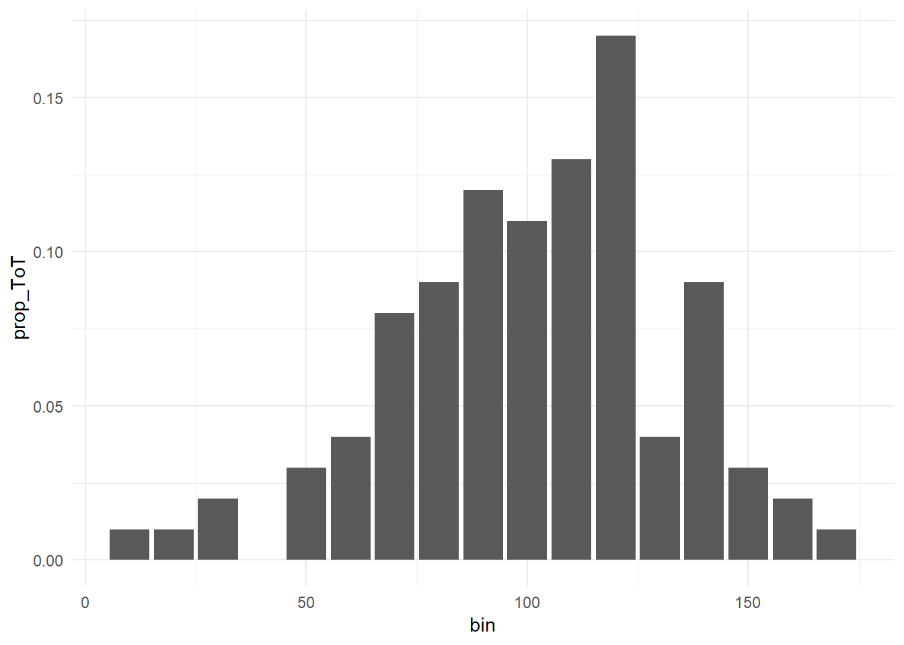
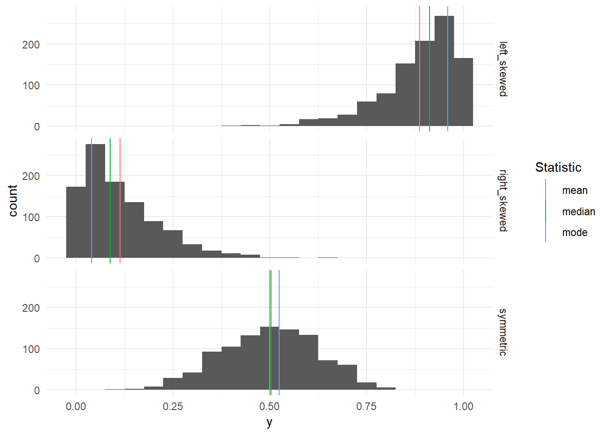
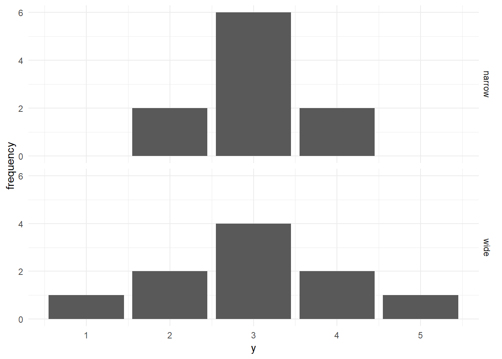
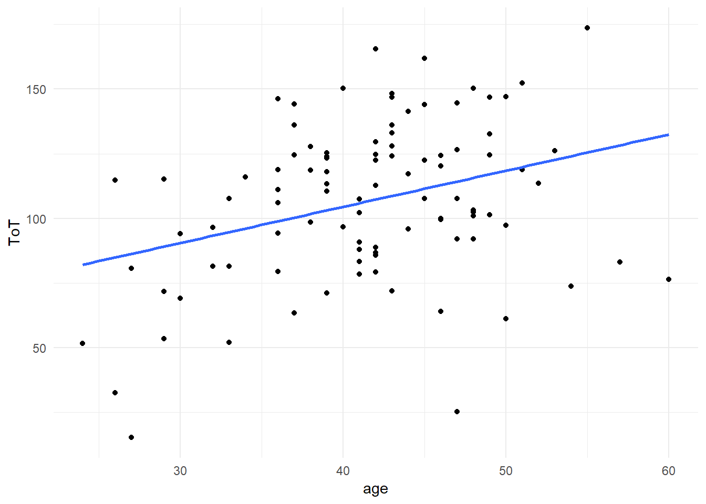
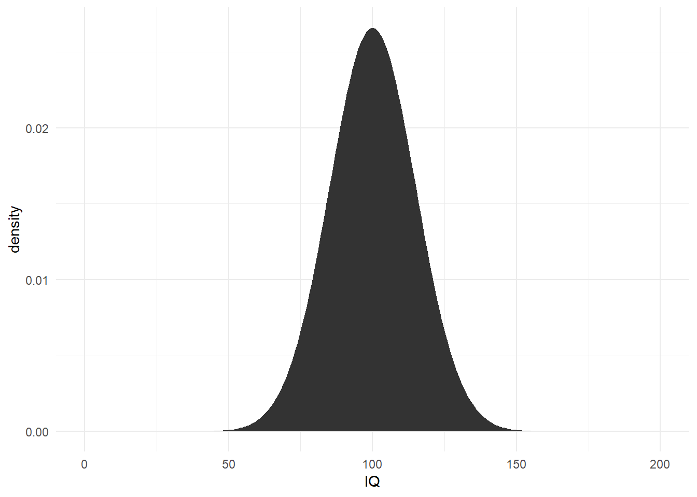
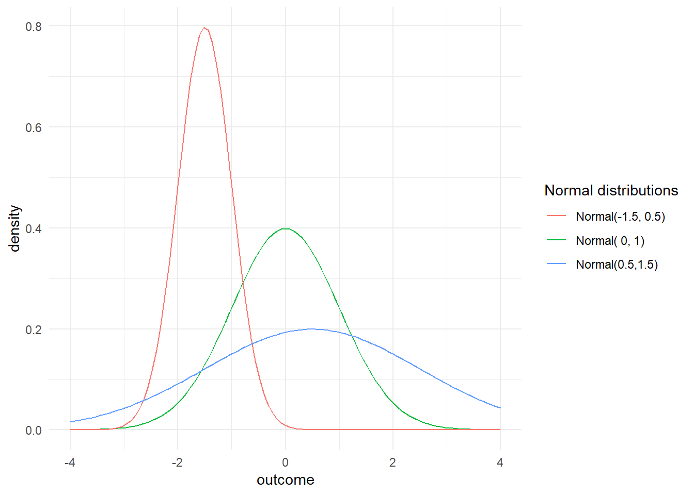
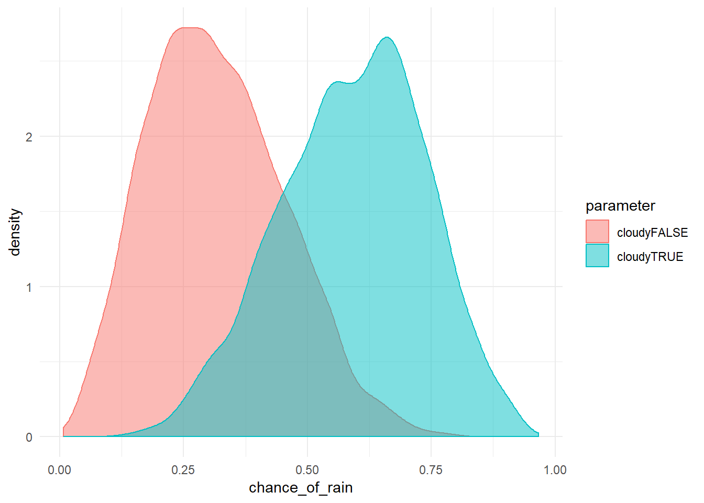

3 Elements of Bayesian statistics
As human beings we make our decisions on what has happened to us earlier in time. For example, we trust a person or a company more, when we can look back at a series of successful transactions. And we have remarkable skills to recall what has just happened, but also what happened yesterday or years ago. By integrating over all the evidence, we form a view of the world we forage. When evidence is abundant, we believe vigorously experience a feeling of certainty, or lack of doubt. That is not to deny, that in a variety of situations, the boundedness of human cognition kick in and we becaome terrible decision makers. This is for a variety of psychological reasons, to name just a few:
- forgetting evidence
- the primacy effect: recent events get more weight
- confirmation bias: evidence that supports a belief is actively sought for, counter-evidence gets ignored.
- the hindsight bias: once a situation has taken a certain outcome, we believe that it had to happen that way.
The very aim of scientific research is to avoid the pitfalls of our minds and act as rational as possible by translating our theory into a formal model, gathering evidence in an unbiased way and weigh the evidence by formal procedures. When a statistic is reported together with the strength of evidence, this is conventionally called an inferential statistic. In applied research, real world decisions depend on the evidence, which has two aspects: first, the strength of effects and the level of certainty we have reached.
Bayesian inferential statistics grounds on the idea of accumulating evidence through and through. Certainty (or belief or credibility or credence) in Bayesian statistics is formalized as a probability scale (0 = impossible, 1 = certain). Evidence accumulates by two mechanisms, the successive observations in a data set and what has already been learned in the past. When new data arrives and is analyzed, a transition occurs from what you new before, prior belief, to what you know after seeing the data, posterior belief. In other words: by data the current belief gets an update.
In the following the essential concepts of statistics and Bayesian analysis will be introduced.
3.1 Descriptive statistics
In empirical research we systematically gather observations. Observations of the same kind are usually subsumed as variables. A set of variables that have been gathered on the same sample are called a data set, which typically is a table with variables in columns. In the most general meaning, a statistic is a single number that somehow represents relevant features of a data set. Statistics fall into several broad classes that answer certain types of questions:
- frequency: how many measures of a certain kind can be found in the data set?
- central tendency: do measures tend to be located left (weak) or right (strong) on a scale?
- dispersion: are measures close together or widely distributed along the scale?
- association: does one variable X tend to change when another variable Y changes?
3.1.1 Frequencies
attach(Sec99)The most basic statistics of all probably is the number of observations on a variable \(x\), usually denoted by \(n_{x}\). The number of observations is a rough indicator for the amount of data that has been gathered, which is directly linked to the level of certainty we can reach.
length(Ver20$ToT)## [1] 100The number of observations is not as trivial as it may appear at first. In particular, it is usually not the same as the sample size, for two reasons: First, most studies employ repeated measures to some extent. You may have invited \(n_{Part}\) participants to your lab, but on each participant you have obtained several measures of the same kind. When every participant is tested on, let’s say, five tasks, the amount of data obtained gets larger. Second, taking a valid measure can always fail for a variety of reasons, reasulting in missing values. For example, in the 99 seconds study, it has happened, that a few participants missed to fill in their age on the intake form. The researcher is left fewer measures of age \(n_{age}\) than there were participants.
N <- function(x) sum(!is.na(x))
N(Ver20$age)## [1] 97Another important issue is the distribution of measures across groups in a data set. Again, the number of observations in a group is linked to the certainty we can gain on that group. Furthermore, it is sometimes important to have the distribution match the proportions in the population, as otherwise biases may occur.
Ver20 %>%
group_by(Gender) %>%
summarize(n())| Gender | n() |
|---|---|
| female | 59 |
| male | 41 |
The table above shows so called absolute frequencies. When comparing frequencies by groups, it often is more appropriate to report relative frequencies or proportions:
n_Gender <- N(Ver20$Gender)
Ver20 %>%
group_by(Gender) %>%
summarize(proportion = n()/n_Gender)| Gender | proportion |
|---|---|
| female | 0.59 |
| male | 0.41 |
Summarizing frequencies of metric measures, such as ToT or number of errors is useful, too. However, a complication arises by the fact that continuous measures do not naturally fall into groups. Especially in duration measures no two measures are exactly the same.
length(unique(Ver20$Gender))## [1] 2length(unique(Ver20$ToT))## [1] 100The answer to this problem is binning: the scale of measurement is divided into a number of adjacent sections, called bins, and all measures that fall into one bin are counted. For example, we could use bins of 10 seconds and assess whether the bin with values larger than 90 and smaller or equal to 100 is representative in that it contains a large proportion of values. As the histogram reveals, it is not very representative.
bin <- function(x, bin_width = 10) floor(x/bin_width) * bin_width
n_ToT <- N(Ver20$ToT)
Ver20 %>%
mutate(bin = bin(ToT)) %>%
group_by(bin) %>%
summarize(prop_ToT = n()/n_ToT) %>%
ggplot(aes(x = bin, y = prop_ToT)) +
geom_col()
# Ver20 %>%
# ggplot(aes(x = ToT)) +
# geom_histogram(binwidth = 10)Strictly spoken, grouped and binned frequencies are not one statistic, but a vector of statistics. A plot that shows the density of values in a sequence of bins is called a histogram. It approximates what we will later get to know more closely as a distribution.
3.1.2 Central tendency
Reconsider Jane 2.3.4. When asked about whether users can complete a transaction within 99, she looked at the population average of her measures. The population average is what we call the (arithmetic) mean. The mean is computed by summing over all measures and divide by the number of observations.
mean <- function(x) sum(x)/length(x)mean(Ver20$ToT)## [1] 106Imagine a competitor would go to court. Not an expert in that matter, my humble opinion is that one of the first questions to be regarded probably is: what does “rent a car in 99 seconds” actually promise? And here are some other ways to interpret the same slogan:
“50% (or more) of users can rent a car in 99 seconds”. This is called the median. The median is computed by bringing all measures into an order and collect the element right in the center, or the mean of the center pair of values when the number of observations is even.
median <- function(x){
n <- length(x)
center <- (n + 1)%/%2
if (n%%2 == 1)
sort(x, partial = center)[center]
else mean(sort(x, partial = center + 0:1)[center + 0:1])
}Actually, the median is a special case of so called quantiles. The court could decide that 50% of users is too lenient as a criterion and could demand that 75% percent of users must complete the task within 99 seconds for the slogan to be considered valid.
quantile(Ver20$ToT, .75)## 75%
## 125A common pattern in distributions of measures is that a majority of observations accumulate in the center region. The point of highest density of a distribution is called the mode. In other words: the mode is the region (or point) that is most likely to occur. For continuous measures this once again poses the problem that every value is unique. Sophisticated procedures exist to smooth over this inconvenience, but by binning we can construct an approximation of the mode: just choose the center of the bin with highest frequency.
mode <- function(x, bin_width = 10) {
bins <- bin(x, bin_width)
bins[which.max(tabulate(match(x, bins)))] + bin_width/2
}Ver20| Obs | Part | ToT | age | Gender |
|---|---|---|---|---|
| 1 | 1 | 146.1 | 36 | female |
| 2 | 2 | 88.1 | 41 | male |
| 3 | 3 | 115.9 | 34 | female |
| 4 | 4 | 124.0 | 39 | female |
| 5 | 5 | 117.1 | 44 | male |
| 6 | 6 | 101.8 | NA | female |
| 7 | 7 | 150.3 | 40 | female |
| 8 | 8 | 102.2 | 41 | male |
| 9 | 9 | 165.6 | 42 | female |
| 10 | 10 | 103.1 | 48 | male |
| 11 | 11 | 144.1 | 37 | female |
| 12 | 12 | 173.6 | 55 | male |
| 13 | 13 | 63.3 | 37 | male |
| 14 | 14 | 96.6 | 40 | female |
| 15 | 15 | 101.0 | 48 | female |
| 16 | 16 | 124.1 | 43 | female |
| 17 | 17 | 96.5 | 32 | female |
| 18 | 18 | 25.3 | 47 | male |
| 19 | 19 | 31.8 | NA | male |
| 20 | 20 | 144.6 | 47 | female |
| 21 | 21 | 95.8 | 44 | male |
| 22 | 22 | 51.6 | 24 | female |
| 23 | 23 | 99.8 | 46 | female |
| 24 | 24 | 141.4 | 44 | female |
| 25 | 25 | 161.9 | 45 | male |
| 26 | 26 | 92.1 | 47 | male |
| 27 | 27 | 97.3 | 50 | female |
| 28 | 28 | 52.1 | 33 | female |
| 29 | 29 | 118.8 | 36 | female |
| 30 | 30 | 85.8 | 42 | female |
| 31 | 31 | 118.7 | 38 | female |
| 32 | 32 | 126.1 | 53 | female |
| 33 | 33 | 136.1 | 37 | female |
| 34 | 34 | 86.7 | 42 | female |
| 35 | 35 | 120.1 | 46 | female |
| 36 | 36 | 53.5 | 29 | male |
| 37 | 37 | 81.5 | 33 | female |
| 38 | 38 | 79.5 | 36 | male |
| 39 | 39 | 32.6 | 26 | male |
| 40 | 40 | 106.1 | 36 | female |
| 41 | 41 | 111.2 | 36 | female |
| 42 | 42 | 94.2 | 36 | female |
| 43 | 43 | 127.7 | 38 | female |
| 44 | 44 | 83.2 | 41 | male |
| 45 | 45 | 64.0 | 46 | female |
| 46 | 46 | 118.0 | 39 | female |
| 47 | 47 | 80.7 | 27 | female |
| 48 | 48 | 148.3 | 43 | male |
| 49 | 49 | 92.1 | 48 | female |
| 50 | 50 | 124.7 | 42 | male |
| 51 | 51 | 114.7 | 26 | female |
| 52 | 52 | 81.5 | 32 | male |
| 53 | 53 | 152.3 | 51 | female |
| 54 | 54 | 124.3 | 46 | female |
| 55 | 55 | 107.7 | 45 | male |
| 56 | 56 | 113.3 | 39 | female |
| 57 | 57 | 125.4 | 39 | male |
| 58 | 58 | 107.7 | 33 | female |
| 59 | 59 | 15.2 | 27 | male |
| 60 | 60 | 113.5 | 52 | male |
| 61 | 61 | 94.0 | 30 | female |
| 62 | 62 | 110.6 | 39 | female |
| 63 | 63 | 122.5 | 45 | female |
| 64 | 64 | 147.0 | 50 | female |
| 65 | 65 | 83.2 | 57 | male |
| 66 | 66 | 144.1 | 45 | male |
| 67 | 67 | 115.1 | 29 | male |
| 68 | 68 | 136.2 | 43 | male |
| 69 | 69 | 132.6 | 49 | female |
| 70 | 70 | 126.6 | 47 | female |
| 71 | 71 | 73.7 | 54 | female |
| 72 | 72 | 102.3 | 48 | female |
| 73 | 73 | 123.7 | NA | male |
| 74 | 74 | 76.4 | 60 | male |
| 75 | 75 | 88.7 | 42 | female |
| 76 | 76 | 122.4 | 42 | female |
| 77 | 77 | 128.0 | 43 | male |
| 78 | 78 | 118.9 | 51 | female |
| 79 | 79 | 78.4 | 41 | female |
| 80 | 80 | 72.0 | 43 | female |
| 81 | 81 | 150.4 | 48 | male |
| 82 | 82 | 112.7 | 42 | male |
| 83 | 83 | 107.7 | 47 | female |
| 84 | 84 | 101.4 | 49 | male |
| 85 | 85 | 69.2 | 30 | female |
| 86 | 86 | 123.4 | 39 | male |
| 87 | 87 | 98.5 | 38 | male |
| 88 | 88 | 99.5 | 46 | male |
| 89 | 89 | 133.0 | 43 | female |
| 90 | 90 | 129.7 | 42 | male |
| 91 | 91 | 146.8 | 43 | male |
| 92 | 92 | 90.7 | 41 | male |
| 93 | 93 | 124.5 | 37 | female |
| 94 | 94 | 146.7 | 49 | female |
| 95 | 95 | 71.7 | 29 | male |
| 96 | 96 | 79.2 | 42 | female |
| 97 | 97 | 71.0 | 39 | female |
| 98 | 98 | 61.2 | 50 | female |
| 99 | 99 | 107.4 | 41 | male |
| 100 | 100 | 124.6 | 49 | male |
Ver20 %>%
group_by() %>%
summarize(
mean_ToT = mean(ToT),
median_ToT = median(ToT),
mode_ToT = mode(ToT))| mean_ToT | median_ToT | mode_ToT |
|---|---|---|
| 106 | 108 | 145 |
The table above shows the three statistics for central tendency side-by-side. Mean and median are close together. This is frequently the case, but not always. When the distribution of measures is completely symmetric mean and median perfectly coincide. In section @(distributions) we will encounter distributions that are not symmetric. The more a distribution is skewed, the stronger the difference between mean and median increases.

To be more precise: for left skewed distributions the mean is strongly influenced by few, but extreme, values in the left tail of the distribution. The median only counts the number of observations to both sides and is not influenced by how extreme these values are. Therefore, it is located more to the right. The mode does not regard any values other than those in the densest region and just marks that peak. The same principles hold for right-skewed distributions.
To summarize, the mean is the most frequently used measure of central tendency, one reason being that it is a so called sufficient statistic, meaning that it exploits the full information present in the data. The median is frequently used when extreme measures are a concern. The mode is the point in the distribution that is most typical.
3.1.3 Dispersion
In a symmetric distribution with exactly one peak, mean and mode coincide and the mean represents the most typical value. For a value being more typical does not mean it is very typical. That depends on how the measures are dispersed over the whole range. In the figure below, the center value of the narrow distribution contains 60% of all measures, as compared to 40% in the wide distribution, and is therefore more representative.
D_disp <-
tribble(~y, ~narrow, ~wide,
1, 0, 1,
2, 2, 2,
3, 6, 4,
4, 2, 2,
5, 0, 1) %>%
gather(Distribution, frequency, -y)
D_disp %>%
ggplot(aes(x = y,
y = frequency)) +
facet_grid(Distribution ~ .) +
geom_col()
A very basic way to describe dispersion of a distribution is to report the range between the two extreme values, minimum and maximum. These are easily computed by sorting all values and selecting the first and the last element. Coincidentally, they are also special cases of quantiles, namely the 0% and 100% quantiles.
The range statistic only uses just these two values and therefore does not fully represent the amount of dispersion. A statistic for dispersion that does so is the variance, which is the mean of squared deviatons from the mean. Squaring the deviations always produces a positive value, but makes variance difficult to interpret. The standard deviation is the square root of variance. By reversing the square the standard deviation is on the same scale as the original measures and their mean.
min <- function(x) sort(x)[1]
max <- function(x) quantile(x, 1)
range <- function(x) max(x) - min(x)
var <- function(x) mean((mean(x) - x)^2)
sd <- function(x) sqrt(var(x))
Ver20 %>%
summarize(min(ToT),
max(ToT),
range(ToT),
var(ToT),
sd(ToT))| min(ToT) | max(ToT) | range(ToT) | var(ToT) | sd(ToT) |
|---|---|---|---|---|
| 15.2 | 174 | 158 | 966 | 31.1 |
detach(Sec99)3.1.4 Associations
Are elderly users slower at navigating websites? How does reading speed depend on font size? Is the result of an intelligence test independent from gender?
A majority of research deals with associations between variables and the present section introduces some statistics to describe them. Variables represent properties of the objects of research and fall into two categories: Metric variables represent a measured property, such as speed, height, money or perceived satisfaction. Categorial variables put observations (or objects of research) into non-overlapping groups, such as experimental conditions, persons who can program or cannot, type of education etc. Consequently, associations between any two variables fall into precisely one of three cases:
| categorial | metric | |
|---|---|---|
| categorial | frequency cross tables | differences in mean |
| - | - | - |
| metric | classification | covariance, correlation |
| - | - | - |
All forms of associations derive directly from statistics we have already encountered. That is obvious for when one variable is categorial and a little more subtle for two metric variables.
When there are only categories in the game, but no measures, the only way to compare is by frequencies. To illustrate the categorial-categorial case, consider a study to assess the safety of two syringe infusion pump designs, called Legacy and Novel. All participants of the study are asked to perform a typical sequence of operation and it is recorded whether the sequence was completed correctly or not.
attach(IPump)
D_agg %>%
filter(Session == 3) %>%
group_by(Design, completion) %>%
summarize(frequency = n()) %>%
ungroup() %>%
spread(completion, frequency)| Design | FALSE | TRUE |
|---|---|---|
| Legacy | 21 | 4 |
| Novel | 22 | 3 |
Besides the troubling result that incorrect completion is the rule, not the exception, there is almost no difference between the two designs. Note that in this study, both professional groups were even in number. If that is not the case, it is preferred to report proportions within a group. Note how every row sums up to \(1\).
D_agg %>%
filter(Session == 3) %>%
group_by(Design, completion) %>%
summarize(frequency = n()) %>%
group_by(Design) %>%
mutate(frequency = frequency/sum(frequency)) %>%
ungroup() %>%
spread(completion, frequency)| Design | FALSE | TRUE |
|---|---|---|
| Legacy | 0.84 | 0.16 |
| Novel | 0.88 | 0.12 |
In a similar manner, associations between groups and metric variables are reported by group means. In the case of the two infusion pump designs, the time spent to complete the sequence is compared by the following table. And as you can see, adding a comparison of variance is no hassle.
D_agg %>%
filter(Session == 3) %>%
group_by(Design) %>%
summarize(mean_ToT = mean(ToT),
sd_ToT = sd(ToT))| Design | mean_ToT | sd_ToT |
|---|---|---|
| Legacy | 151.0 | 62.2 |
| Novel | 87.7 | 33.8 |
For associations between two metric variables, covariance is a commonly employed statistic for the association between two variables and derives directly from variance, with the difference that the square of deviations is replaced by the multiplication of two deviations. For example, we may want to assess whether there is any relationship between years of experience and ToT:
\[ \textrm{cov}_{XY} = \frac{1}{n} \sum_{i=1}^n (x_i - E(X)) (y_i - E(Y)) \]
cov <- function(x, y)
mean((x - mean(x, na.rm = T)) * (y - mean(y, na.rm = T)), na.rm = T)cov(D_agg$experience, D_agg$ToT)## [1] 271When at large the deviations go into the same direction from the respective mean, covariance becomes positive. When the deviations primarily move in opposite direction it is negative. When the picture is mixed, covariance will stay close to zero. The three plots below illustrate three covariances, a strongly positive, a weakly positive and a moderate negative one.


The graphs highlight the deviation from the population mean of each variables. A strong covariance emerges whenever there is a strong tendency to deviate in either one direction. In fact, the illustration introduces a geometric interpretation: every data point stretches a rectangle which has an area of the product of the two deviations, just like in the formula of covariance.
As intuitive the idea of covariance is, as unintelligible is the statistic itself for reporting results. Covariance is not a pure measure of association, but is contaminated by the dispersions of \(X\) and \(Y\). For that reason, two covariances can hardly be compared. The Pearson correlation coefficient \(r\) solves the problem by rescaling a covariance by the two standard deviations:
\[ r_XY = \frac{\textrm{cov}_{XY}}{\textrm{sd}_X \textrm{sd}_Y} \]
cor <- function(x, y)
cov(x, y)/(sd(x, na.rm = T) * sd(y, na.rm = T))
cor(D_psychomet$MRS_1, D_psychomet$MRS_2)## [1] 0.952Due to the standardization of dispersion, \(r\) lets the researcher interpret strength of association independent of scale of measurement. More precisely, \(r\) will always be in the interval \([-1,1]\). That makes it the perfect choice for several purposes.
In the field of psychometrics, correlations are ubiquotously employed to represent reliability and validity of tests. For example, when the long-term career of an individual is dependent on the score of an assessment, it would be inexceptable if test scores differed strongly from day to day. Test-retest stability is one form to measure reliability and it is just the correlation of the same test taken on different days. For example, we could ask whether mental rotation speed as measured by the mental rotation task is a stable, such that we can use it for long-term predictions of whether someone will become a good surgeon. A reliability of \(.95\) will probably satisfy most psychometricians. Validity of a test means that it predicts what it was intended for. For example, we could ask how well the ability of a person to become a minimally invasive surgeon depends on spatial cognitive abilities, like mental rotation speed. Validity could be assessed by taking performance scores from exercises in a surgery simulator and do the correlation with mental rotation speed. A correlation of \(r = .5\) would indicate that mental rotation speed as measured by the task has rather limited validity. Another form is called discriminant validity and is about how specific a measure is. Imagine another test is already part of the assessment suite. This test aims to measure another aspect of spatial cognition, namely the capacity of the visual-spatial working memory (e.g., the Corsi block tapping task). If both tests are as specific as they claim to be, we would expect a particularly low correlation.
D_psychomet %>%
GGally::ggpairs()
Correlations allow psychometricians to employ absolute standards for the quality of measures. In exploratory analysis, one often seeks to get a broad overview of how a bunch of variables is associated. Creating a correlation table of all variables is no hassle and allows to get a broad picture of the situation. Correlations are ubitutous in data analysis, but have limitations: First, a correlation only uncovers linear trends, whereas the association between two variables can take any conceivable form. The validity of correlations depends on how salient the feature of linear trend is. In the example below, \(Y_1\) reveals a strong parabolic form, which results in zero correlation. The curvature of an exponentially rising function is only captured insufficiently. For that reason, I recommend that correlations are always cross-checked by a scatterplot.
Another situation where covariances and correlations fail is when there simply is no variance. It is almost trivial, but for observing how a variable \(Y\) changes when \(X\) moves is that both variables vary, there is no co-variance without variance.
tibble(x = (0:100)/10,
y_1 = rnorm(101, exp(x)/100, x * 2),
y_2 = rnorm(101, (x - 5)^2, 3)) %>%
ggpairs(lower=list(continuous="smooth"))
3.1.4.1 [HERE]
3.2 Bayesian probability theory
First, be reminded mathematics is empty. In its purest form, it does not require or have any link to the real world. It often helps, to associate a mathematical system with some more real world ideas or illustrations, for example, I remember how my primary school teacher introduced the sum of two numbers as removing elements from one stack and place it on another, until the first stack is empty, piece by piece. Later, I found this to be an exact embodidment of how the sum follows from the Peano axioms, that define the set of natural numbers. Sometimes, a mathematical theory just describes trivial real world intuitions in just more complicated ways, like the Peano axioms. Sometimes a mathematical theory describe real world phenomena that we have no intuition about at all. A classic example is Einstein’s General Relativity Theory, which assumes a curved, rather than straight space. Earlier, Isaac Newton has introduced his Mechanics, grounding on the idea of a Euclidian space, where three dimensions form rectangular cubes, just as we know them. In order to formalize his theory, Einstein used the mathematical theory of Rieman spaces, which were discovered in the 19th century, but initially made no sense to anyone outside mathematics.
Fortunately, the math of probability is more on the intuitive side of things. The most tangible interpretation is that the probability of an event to happen, say throwing a Six with a dice, coincides with the relative frequency of a Six in a (very long) sequence of throws. This is called the frequentist interpretation of probability and this is how probability will be introduced in the following. While thinking in terms of relative frequency in long running sequences is rather intuitive, it has limitations. Not all events we want to assign a probability can be imagined as a long running sequence, among those are:
- the probability that a space ship will safely reach Mars (there’s only this one attempt)
- the probability that a theory is more true than another (there’s only this pair)
- the probability that your house burns down (you only have this one)
Therefore, I will finally introduce the Bayesian interpretation of probability, which is the certainty in one’s belief. While this might be less tangible, it is compatible with the mathematical notion of probability and it is immensly useful in scientific thinking, as progress in science can be described as updating our beliefs about the world.
3.2.1 Some set theory
The mathematical concept of probability can most intuitively be approached by thinking in terms od relative frequency in long-running sequences. Actually, it is not even required to think of a sequence (where events have an order). It suffices to assume a set of events.
A mathematical set is a collection of elements taken from a domain (or universe, more dramatically). These can either be defined by stating all the elements, like \(S = \{\textrm{red}, \textrm{yellow}, \textrm{green}, \textrm{off}\}\) or by a characterizing statement, like:
\(S := \textrm{possible states of a Dutch traffic light}\)
The elements should be clearly identified, but need not have a particular order. (If they do, this is called an ordered set, the set of natural numbers is an example). Sets can have all possible sizes, which is called the cardinality of a set:
- empty like “all opponents who can defeat Chuck Norris”, \(\{\}\) or \(\oslash\)
- finite (and countable) like the states of a traffic light
- infinite, but countable, like the natural numbers \(N\)
- infinite, uncountable, like the real numbers \(R\)
You may wonder now, whether you would ever need such a strange concept as uncaountable infinite sets in your down-to-earth design research. Well, the set of primary interest in every design study is the possible outcomes. Sometimes, these are finite, like \(\{\textrm{success}, \textrm{failure}\}\), but when you measure durations or distances, you enter the realm of real numbers. We will set this issue aside for the moment and return to it later in the context of continuous distributions of randomness.
In order to introduce the mathematical concept of probability, we first have to understand some basic operations on sets. For an illustration, imagine a validation study for a medical infusion pump, where participants were given a task and the outcome was classified by the following three criteria:
- was the task goal achieved successfully?
- was the task completed timely (e.g., one minute or below)?
- were there any operation errors along the way with potentially harmful consequences?
Note how the the data table makes use of logical values to denote their membership to a set. Based on these three criteria, we can extract subsets of observations:
library(sets)All <- as.set(D_sets$Obs)
Success <- as.set(filter(D_sets, Success)$Obs)
Harmful <- as.set(filter(D_sets, Harm)$Obs)
Timely <- as.set(filter(D_sets, Timely)$Obs)The first basic set operator is the complementary set. It selects all elements from the domain that are not part of a given set:
Failure <- All - Success
Harmless <- All - Harmful
Delayed <- All - TimelyOnce there is more than one set in the game, set operators can be used to create all kinds of new sets. First, the union of two sets collects the elements of two separate sets into one new set, for example, the set of all tasks that were failure or delayed (or both):
Failure | Delayed## {1L, 2L, 3L, 4L, 5L, 6L, 19L, 20L, 21L, 22L, 23L, 24L, 25L, 26L,
## 27L, 28L, 29L, 30L}Another commonly used set operator is the intersect, which produces a set that contains only those elements present in both original sets, like the set of timely and succesful task completions:
Success & Timely## {7L, 8L, 9L, 10L, 11L, 12L, 13L, 14L, 15L, 16L, 17L, 18L}The set difference removes elements of one set from another, for example the set of all successful observations with no harmful side effects:
Success - Harmless## {}It turns out that all succesful observations are also harmless. That indicates that the set of successful events is a subset of harmless events. The subset operator differs from those discussed so far, in that it does not produce a new set, but a truth value (also called logical or Boolean). A distinction is made between subsets and proper subsets, where one set contains all elements of another, but never the other way round. If two sets are mutual subsets (and therefore improper), they are equal.
# subset
Success <= Harmless## [1] TRUE# proper subset
Success < Harmless## [1] TRUE# set equality
Success == Harmless## [1] FALSESuccess == (All - Failure)## [1] TRUEThe example above demonstrates another important element of set theory: the empty set, which has the special property of being a subset of all other set:
set() < Success## [1] TRUEAmong other uses, the empty set is important for intersections. It may happen that two sets do not share any elements at all. It would be problematic, if the intersect operator only worked if common elements truly existed. In such a case, the intersection of two sets is the empty set. Sets that have an empty intersection are called disjunct sets and complementary sets are a special case. The package Sets, which defines all operators on sets so far is lacking a dedicated function for disjunctness, but this is easily defined using the intersect function:
is_disjunct <- function(x, y) set_is_empty(x & y)
is_disjunct(Success, Harmful)## [1] TRUESo far, we have only seen sets of atomic elements, where all elements are atomic, i.e. they are not sets themselves. We can easily conceive a set that has elements that are sets. The set of sets that are defined by the three performance criteria and their complementary sets is an obvious example:
set(Success, Failure, Harmful, Harmless, Timely, Delayed)## {<<set(9)>>, <<set(10)>>, <<set(12)>>, <<set(18)>>, <<set(20)>>,
## <<set(21)>>}For the introduction of probability, we need two concepts related to sets o sets: First, a partition of a set is a set of non-empty subsets such that every element is assigned to exactly one subset. The subsets of successes and its conplementary set, all failures, is such a partition. Second, the power set is the set of all possible subsets in a set. Even with a rather small set of 20 elements, this is getting incredibly large, so let’s see it on a smaller example:
S <- set(1, 2, 3)
P <- set_power(S)The power set is tantamount for the definition of probability that follows, because it has two properties: first, for every subset of S it also contains the complementary set. That is called closed under complementarity. Second, for every pair of subsets of S, P it also contains the union, it is closed under union. In the same way, power sets are also closed under intersection. Generally, all sets of subsets that fulfill these three requirements are called \(\Sigma\) algebras. The mathematical theory of \(\Sigma\) algebras is central for the mathematical definition of measures. Loosely speaken, a measure is a mapping from the domain of empirical observations to the domain of numbers, such that certain operations in the domain of measurement have their counterparts in the numerical domain. Probabilities are measures and in the next section we will see how numerical operations on probabilities relate to set operations in a \(\Sigma\) algebra.
3.2.2 Probability
Before we get to a formal presentation of probability, we can develop the idea on the fictional validation study introduced in the previous section. Performance of participants was classified by the three two-level criteria, success, harm and timeliness. Every recorded outcome therefore falls into one of eight possible sets and a purposeful way to summarize the results of the study would be relative frequencies (\(\pi\), pi):
N_sets <- nrow(D_sets)
D_freq <-
D_sets %>%
group_by(Success, Harm, Timely) %>%
summarize(n = n()) %>%
ungroup() %>%
complete(Success, Harm, Timely, fill = list(n = 0)) %>% # adds empty events
mutate(pi = n/sum(n))
D_freq| Success | Harm | Timely | n | pi |
|---|---|---|---|---|
| FALSE | FALSE | FALSE | 1 | 0.033 |
| FALSE | FALSE | TRUE | 2 | 0.067 |
| FALSE | TRUE | FALSE | 3 | 0.100 |
| FALSE | TRUE | TRUE | 6 | 0.200 |
| TRUE | FALSE | FALSE | 6 | 0.200 |
| TRUE | FALSE | TRUE | 12 | 0.400 |
| TRUE | TRUE | FALSE | 0 | 0.000 |
| TRUE | TRUE | TRUE | 0 | 0.000 |
Let’s examine on an abstract level, what has happened here:
- The set of events has been partitioned into eight disjunct subsets
- All subsets got a real number assigned, by the operation of relative frequencies, that is between (and including) zero and one.
- The sum of these numbers is one.
The common mathematical theory of probability assumes a set of outcomes \(\Omega\) and a \(\Sigma\) algebra \(F\) on \(\Omega\), like the power set. An element \(E\) of \(F\) is called an event. Note the difference between outcomes, which are singular outcomes, and events, which are sets of outcomes, like the eight outcome categories above. Also note that these eight sets are a partition of \(\Omega\), but not a \(\Sigma\)-algebra. However, we can easily construct a \(\Sigma\)-algebra by adding all possible unions and intersections. Or we use the power set of outcomes in the data set right-away.
The first Kolmogorov axiom states that a probability is a non-negative real number assigned to every event. Take a look at the table above, to see that this is satisfied for the relative frequencies.
While the first axiom defines a lower border of zero for a probability measure, the second Kolmogorov axiom cares for the upper limit (although somewhat indirectly) by stating that the set of all observations \(\Omega\) (which is an element of \(F\)) is assigned a probability of one. In the table of relative frequencies that is not yet covered, but we can easily do so:
D_sets %>%
# no group_by
summarize(pi = n()/N_sets) %>%
c()## $pi
## [1] 1So far, the theory only cared for assigning numbers to events (subsets), but provides no means to operate on probabilites. The third Kolmogorov axiom establishes a relation between the union operator on sets and the sum operator on probabilities by stating that the probability of a union of disjunct events is the sum of the individual probabilities. We can approve this to be true for the relative frequencies. For example, is the set of all successful observations is the union of successful timely observations. Indeed, the relative frequency of all successful events is the sum of the two and satisfies the third axiom:
D_sets %>%
group_by(Success) %>%
summarize(n = n()) %>%
mutate(pi = n/sum(n))| Success | n | pi |
|---|---|---|
| FALSE | 12 | 0.4 |
| TRUE | 18 | 0.6 |
The Kolmogorov axioms establish a probability measure and lets us do calculations on disjunct subsets. That would be a meager toolbox to do calculations with probabilities. What about all the other set operators and their possible counterparts in the realm of numbers? It is one of greatest wonders of the human mind that the rich field of reasoning about probabilities spawns from just these three axioms and a few set theoretic underpinnings. To give just one example, we can derive that the probability of the complement of a set \(A\) is \(P(\Omega/A) = 1 - P(A)\):
From set theory follows that a set \(A\) and its complement \(\Omega/A\) are disjunct, hence axiom 3 is applicable: \(P(A \cup \Omega/A) = P(A) + P(\Omega/A)\)
From set theory follows that a set \(A\) and its complement \(\Omega/A\) form a partition on \(\Omega\). Using axiom 2, we can infer: \[\begin{aligned} A \cup \Omega/A = \Omega\\ \Rightarrow P(A) + P(\Omega/A) = P(\Omega) = 1\\ \Rightarrow P(\Omega/A) = 1 - P(A) \end{aligned}\]
The third axiom tells us how to deal with probabilities, when events are disjunct. As we have seen, it applies for defining more general events. How about the opposite direction, calculating probabilities of more special events? In our example, two rather general events are Success and Timely, whereas the intersection event Success and Timely is more special. The probability of two events occuring together is called joint probability \(P(\textrm{Timely} \cap \textrm{Success})\). The four joint probabilities on the two sets and their complements are shown in the following table.
D_sets %>%
group_by(Success, Timely) %>%
summarize(pi = n()/N_sets) %>%
ungroup()| Success | Timely | pi |
|---|---|---|
| FALSE | FALSE | 0.133 |
| FALSE | TRUE | 0.267 |
| TRUE | FALSE | 0.200 |
| TRUE | TRUE | 0.400 |
As joint probability asks for simultaneous occurance it treats both involved sets symmetrically: \(P(\textrm{Timely} \cap \textrm{Success}) = P(\textrm{Successes} \cap \textrm{Timely})\). What if you are given one piece of information first, such as “this was a successful outcome” and you have to guess the other “Was it harmful?”. That is called conditional probability and in this case, we even have 100% certainty in our guess, because an observation was only rated a success if there was no harm. But we can easily think of more gradual ways to make a better guess.
\(P(\textrm{Harmful}|\textrm{Success})\)
D_sets %>%
filter(Success) %>%
group_by(Harm) %>%
summarize(n = n()) %>%
mutate(pi = n/sum(n)) %>%
ungroup()| Harm | n | pi |
|---|---|---|
| FALSE | 18 | 1 |
Perhaps, there is a relationship between Timely and Harm in the manner of a speed-accuracy trade-off. In the manner of a speed-accuracy trade-off, there could be a relationship between Timely and Harm. Participants who rush through the task are likely to make more harmful errors. We would then expect a different distribution of probability of harm by whether or not task completion was timely.
D_sets %>%
group_by(Timely, Harm) %>%
summarize(n = n()) %>%
mutate(pi = n/sum(n)) %>%
ungroup()| Timely | Harm | n | pi |
|---|---|---|---|
| FALSE | FALSE | 7 | 0.7 |
| FALSE | TRUE | 3 | 0.3 |
| TRUE | FALSE | 14 | 0.7 |
| TRUE | TRUE | 6 | 0.3 |
See how conditional probabilities sum up to one within their condition. In this case, the conditional probabilities for harm are the same for successes and failures. As a consequence, it is also the same as the overall probability, hence:
\[\begin{aligned} P(\textrm{Harm} | \textrm{Timely}) = P(\textrm{No harm} | \textrm{Timely}) = P(\textrm{Timely}) \end{aligned}\]
This sitation is called independence of events and it means that knowing about one variable does not help in guessing the other. In statistics, conditional probability is an important concept. In particular, it will carry us away from the set theoretic interpretation towards the Bayesian interpretation of probability as states of knowledge.
- joint probability
- conditional probability (events in a sequence –> knowledge of A is knowledge of B)
- independence
- Bayes theorem
Other definitions and basic numerical operations on probabilities can be inferred in similar ways.
The basic operations on probability then give rise to more advanced laws of probability:
3.2.3 Likelihood
[…]
Consider the following example: A standard dice is rolled twice. How likely is an outcome of two times Six? We use probability theory: It is the same dice and the results of the rolls are independent. The probability of rolling a Six on either attempt is \(p(y_1 = \textrm{Six}) = p(y_2 = \textrm{Six}) = {1 \over 6}\). Therefore the joint probability is just the product:
\[ P(y_1 = \textrm{Six} \textrm{ and } y_2 = \textrm{Six}) \\= P(y_1 = \textrm{Six}) \times P(y_2 = \textrm{Six})= {1 \over 36} \]
The joint probability of all data points is called the Likelihood and generalizes to situations where the probabilities of events are not the same, for example: What is the probability of the first dice being an Four, the second a five and the third a Three or a Six?
\[ P(y_1 = \textrm{Four} \textrm{ and } y_2 = \textrm{Five} \textrm{ and } y_3 = \textrm{Three} \textrm{ or } \textrm{Six}\\ = {1 \over 6} \times \frac 1 6 \times \frac 1 3 = \frac 1 {108} \]
Notice how the likelihood gets smaller in the second example. In fact, likelihoods are products of numbers between zero and one and therefore become smaller with every observation that is added. In most empirical studies, the number of observations is much larger than two or three and the likelihood becomes inexpressibly small. Consider the following results from 16 rolls. In order to distinguish the base probability for any side from derived probabilities, we call it \(\pi = \frac 1 6\)
set.seed(42)
Events <- c("One", "Two", "Three", "Four", "Five", "Six")
Result <- sample(Events, 16, replace = T)
pi = 1/6
Likelihood <- pi^length(Result)The likelihood of this result, given that it is a fair dice, is \(\frac 1 6^{16} = 3.545\times 10^{-13}\). Therefore, one usually reports the logarithm of the likelihood (log-likelihood). This results in “reasonable” negative numbers. Why negative? Because all Likelihoods are fractions of One (the identity element of multiplication), which results in a negative logarithm.
(logLik <- log(Likelihood))## [1] -28.7The dice rolling example above has a twist. assumed that we may enter \(\pi = {1 \over 6}\), because we believe that it is a fair dice, without further notice. In other words, we needed no data, because of overwhelming prior knowledge (or theory, if you will). Imagine we have been called in to uncover fraud with biased dices in a casino. There is suspicion, that the chance of rolling a Six is lower than \(1 \over 6\). So, what is the (most likely) chance of rolling a Six? With the help of a dice rolling robot, the following 6000 rolls have been recorded.
n_Rolls <- 6000
Biased_dice <-
tibble(Side = as_factor(Events),
pi = c(1/6 + .02, rep(1/6, 4), 1/6 - .02))
set.seed(41)
Rolls <- tibble(Roll = 1:n_Rolls,
Result = sample(Biased_dice$Side,
prob = Biased_dice$pi,
size = n_Rolls,
replace = T))
head(Rolls)| Roll | Result |
|---|---|
| 1 | Three |
| 2 | Six |
| 3 | Five |
| 4 | One |
| 5 | Two |
| 6 | Six |
Rolls %>%
ggplot(aes(x = Result)) +
geom_bar()
The result is shown in the figure above. For simplicity we just focus on rolling Six. If we have no prior assumptions about the dice, the estimated probability is simply the relative frequency of Six.
Rolls %>%
group_by(Result) %>%
summarize(pi = n()/n_Rolls)| Result | pi |
|---|---|
| One | 0.189 |
| Two | 0.177 |
| Three | 0.163 |
| Four | 0.160 |
| Five | 0.164 |
| Six | 0.147 |
In this case, we can simply note down that the most likely value is \(\pi_{Six} =.147\), which is lower than the fair 0.167. But, note the slight ruggedness of the bar chart. Not a single bar is read as exactly \(1 \over 6\), so the deviation of Six could have happened by chance. One way to approach this question is comparing the likelihoods \(P(\text{Result = Six}|\pi = {1 \over 6})\) and \(P(\text{Result = Six}|\pi = {.147})\). For that purpose, we create a new event variable Six, that indicates whether a roll is a Six (TRUE) or not (FALSE). Further, a distribution function is required that assigns these events their probabilities. Distribution functions can take very complicated forms [REF statistical models], but in the case here it is the rather simple Bernoulli distribution.
\[ d_\text{Bern}(\text{Six}|p) = \begin{cases} \text{Six} ,& p\\ \text{not Six},& 1 - p \end{cases} \]
The log-likelihood function of the Bernoulli distribution is just the sum of log-probabilities across all Rolls \(y_i\).
\[ LL_\text{Bern}(\pi) = \sum_i{\log(d_\text{Bern}(\text{Six},\pi))} \]
Now, we can determine the ratio of likelihoods, conditional on \(\pi\). Recall that with logarithmic transformations, what was a ratio becomes a difference.
\[ LR = \exp(LL_\text{Bern}(.147) - LL_\text{Bern}(\frac 1 6) \]
Rolls <- Rolls %>%
mutate(Six = (Result == "Six"))
dbern <- function(y, pi) if_else(y, pi, 1 - pi)
LL_bern <- function(pi) sum(log(dbern(Rolls$Six, pi)))
pi_fair = 1/6
pi_est = .147
exp(LL_bern(pi_est) - LL_bern(pi_fair))## [1] 4846Now, recall what a likelihood is: the probability of the observed data, under a certain model. Here, the data is almost 5000 times more likely with \(p = .147\). In classic statistics, such likelihood ratios are routinely been used for comparison of models.
Previously, I have indicated that the relative frequency gives us the most likely value for parameter \(\pi\) (the case of a Bernoulli distributed variable), the maximum likelihood estimate (MLE). The MLE is that point in the parameter range (here \([0;1]\)), with the maximum likelihood. It is the point, where the data is most likely. In a similar way, the mean of Normal distributed measures is the maximum likelihood estimate for the distribution parameter \(\mu\). But, more advanced models do not have such a closed form, i.e., a formula that you can solve. Therefore, parameter estimation in classic statistics heavily grounds on numerical procedures to find maximum likelihood estimates, which I will now outline for illustrative purposes:
Notice that the probability function \(d_\text{Bern}(y_i, \pi)\) has two parameters, the result of a roll and the base probability. The likelihood function, in contrast, only has the parameter \(\pi\), whereas the data is “buried” inside. This is by convention in order indicate that the likelihood function takes the data as fixed and is meant to explore the range of values for the parameter. By varying the parameter and reading the resulting likelihood of data, we can numerically interpolate the MLE. The most basic numerical interpolation method is a grid search, which starts at the left boundary of parameter range, zero in this case, and walks in small steps along a grid to the right boundary (one). By convention, maximum likelihood estimation is performed by minimizing the negative log-likelihood. For the convenience, the following likelihood function has been vectorized, to make it work smoothly in a tidy processing chain.
LL_bern <- function(pi) map_dbl(pi, function(x) sum(log(dbern(Rolls$Six, x))))
LL_bern(c(.1, .2))## [1] -2572 -2563LL_grid <-
tibble(pi = seq(.01, .99, by = .01)) %>% ## the grid
mutate(nlogLik = -LL_bern(pi),
rank = min_rank(nlogLik),
MLE = (rank == 1))
LL_grid %>%
ggplot(aes(x = pi, y = nlogLik)) +
geom_line() +
geom_point(data = filter(LL_grid, MLE), color = "Red") +
geom_text(data = filter(LL_grid, MLE), label = "MLE", color = "Red", nudge_y = -500)
Because we use the negative log-liklihood, the value for \(\pi\) with maximum likelihood is the minimum of the likelihood curve. Here, \(pi_\text{MLE} = 0.15\), which is very close to the relative frequency estimate. It is always possible to get even more accurate by using a finer grid.
(MLE <- filter(LL_grid, MLE))| pi | nlogLik | rank | MLE |
|---|---|---|---|
| 0.15 | 2507 | 1 | TRUE |
In classic statistics MLE is one of the most common methods for estimating parameters from models. However, most of the time, data is more abundant and there is more than one parameter. It is possible tow extend the grid method to as many parameters as the model contains by just creating multi-dimensional grids. However, already a two-dimensional grid of rather coarse \(100 \times 100\) would require the computation of 10.000 likelihoods. Classic statisticians have therefore developed optimization methods to identify the MLE with as few runs as possible. Soon, we will turn our attention to Bayesian estimation, where the Likelihood plays a central role in estimation, too [REF]. Another appliction of the Likelihood is introduced in chapter ??, where it defines the deviance criterion for model goodness-of-fit.
3.2.4 Certainty as probability
Inferential statistics serves rational decision making under uncertainty by attaching information on the level of certainty to a parameter of interest. A central difference between frequentist and Bayesian statistical theory is how the elusive concept of certainty emerges.
Let us for a moment return to how probability was axiomatically defined by Kolmogorov’s axioms. The axioms themselves only speak of relations between sets and ptobability. At no point do these axioms operate on frequencies (such as the cardinality of sets). The axioms are not constructive in the way that they show you how to calculate a probability in the real world. They just define the requirements for any number to be called a probability. It is our intuition that makes it almost inevitable to think of probability of a set \(A\) as relative frequencies, i.e. the ratio of the cardinality of A divided by the cardinality of the universal set \(\Omega\). Relative frequency precisely is the frequentist defintion of probability:
\[ P(A) = {|A| \over |\Omega|} \]
In frequentist statistics, a common way to express ones level of certainty about a parameter (say, the population mean) is the confidence interval, which is expressed as two endpoints:
attach(Sec99)Ver20 %>%
lm(ToT ~ 1, data = .) %>%
confint()| 2.5 % | 97.5 % | |
|---|---|---|
| (Intercept) | 99.8 | 112 |
The 95% confidence interval is defined by assuming an (infinite) set of replications of the very same experiment and using relative frequencies: The 95% confidence interval is constructed in such a way that, if the same experiment were repeated an infinite number of times, in 95% of these repetitions the true value is contained in the interval.
And similar it goes for the infamous p-value: A result is called statistically significant on level \(\alpha = .05\), if drawing from the null distribution (an infinite number of times) will produce the observed result or a larger result in no more than 5% of cases.
You are not alone when you lack intuition of what the definition says and when you feel at unease about where all these experiments are supposed to come from. (Most of the time they are just imaginations.) As much as I usually embrace parsimony, it must not kill intuition. Also, the Kolmogorov axioms can be satisfied by other interpretations of probability. In Bayesian statistics, the level of certainty is expressed as a proposition about one’s state of knowledge, like : Based on my data I am 95% sure that there is a difference. Equating level of certainty with probability directly, without taking the detour via relative frequencies, may be a little lax, but it leads to remarkably intuitive statements on uncertainty. In Bayesian statistics the credibility interval is defined as: With a probability of 95%, the true value is contained. Since there seems to be no external criterion (such as a series of experiments, imagined or not), Bayesian statistics often faced the criticism of being subjective. In fact, if we imagine a certainty of 95% as some number in the researchers mind, that might be true. But, it is quite easy to grasp certainty as an objective quantity, when we assume that there is something at stake for the researcher and that she aims for a rational decision. In the previous chapter I have illustrated this idea by the example of carrying an umbrella with you (or not) and the 99 seconds claim. Generally, it helps to imagine any such situation as a gamble: if you bet 1 EUR that the true population mean is outside the 95% credibility interval, as a rational person I would put 19 EUR against.
In effect, the Bayesian certainty is a probability in mathematical terms, without the necessity to implement it as a relative frequency. That liberates our reasoning from the requirement to think of long-running series, when this makes little sense to us. Much of the time, we have only this one shot. In the next section we will see how probability theory is used to operate on certainties using Bayes famous theorem.
3.2.5 Bayes theorem (and the dynamics of belief)
In Bayesian statistics, certainty (or strength of belief, state of knowledge, credibility) is assumed to follow all rules of probability theory. We may still think of it in terms of frequencies or illustrate it as a gamble, whatever fits the context better. What sets Bayesian statistics apart is how it emphasizes the dynamics of certainty, like in the real world:
- Someone sceptical of climate change may change their view after one very hot summer.
- Everyone believed strongly in Newton’s Mechanics, but some people got curious when it turned out that light speed is constant.
Note how these examples all have the same dynamics: a prior belief is updated when new data arrives. These are precisely the three elements of Bayesian statistics:
- the prior belief is what you believe before (climate change is a myth)
- the likelihood is what you learn by observation (hot summer)
- the posterior belief is your adjusted believe after seeing the data (maybe not such a myth)
Before we get to a more formal definition of the dynamics of knowledge, Bayes theorem, let us explore this idea a little. First of all, it seems that updating knowledge is the primary purpose of any central nervous system, including its sensors (which provide the data).
The data is usually the present observation or study. But, that does not exclude that prior knowledge grounds on data, too. In experimental Psychology researchers entertain themselves repetitions of the very same experimental paradigm, with slight variations maybe. For example, in the famous Stroop effect, participants have to name the ink color of a word. When the word is itself a color word and refers to a different color, response times typically increase. This effect has been replicated in many dozens of published studies and, probably, thousands of student experiments. Cumulative evidence is so strong that, would repeat the experiment another time and find the reverse effect, no one would seriously take this as a debunk. This extreme example illustrates another principle that follows from Bayes rule:
Today’s posterior is tomorrow’s prior.
There is no principled difference between prior and posterior. They are just levels of belief (credences) at different points in time. Both differ in strength: prior knowledge can be firm when it rests on an abundance of past evidence. The same holds for the likelihood in the present data: the more observations, the stronger the evidence. This is why larger sample sizes are usually preferred. Prior belief and likelihood can be congruent or contradict each other. When they are congruent, prior belief is just strengthened by the data. When they are contradicting each other, prior belief is over-ruled to some degree. That degree depends on how much data there is.
Whatever happens in the individual case, it is generally accepted that scientific progress is incremental over large periods of time. Under this perspective the idea of updating one’s belief is even trivial. It is common sense, that if you are too uncertain about a situation you better gather more information. Once you have reached a satisfactory level of certainty, you proceed to act (or publish). However, as readers with a very firm background in classic statistics may know, once you have settled down on a sample size (and a level of significance), you absolutely must test precisely this number of participants. Stopping early (because you have reached the desired p-value) or adding to the sample is strictly forbidden. Doesn’t that bother you under the perspective of accumulative evidence? It should bother you that incremental collection of evidence is impossible when doing frequentist statistics. On the other hand, in Bayesian statistics, accumulation of evidence is a core feature.
Neither is there a way to express one’s prior belief when doing a t-test, nor may you continuously adjust your sample size until satisfactory certainty is reached. In the fictional example of the Stroop task, the classic data analysis pretends as if no one has ever done such an experiment before. At the same time, it is strictly forbidden to invite further participants to the lab, when the test results point into the right direction, but evidence is still to weak. If you planned the study with, say, \(N = 20\), this is what you must do, no less no more. If you reach your goal with less participants, you must continue testing. If you are unsatisfied with the level of certainty, the only permissable action is dump your data and start over from zero. The denial incremental knowledge is commonly counter-intuitive and for a researcher it is a millstone around the neck.
Reconsider Jane and Andrew. What did they know about the current state of affairs when running a particular session. Using some time-on-task measures they disproved the claim “rent a car in 99 seconds”. Recall how precisely the question was phrased: on average, users had to be able to complete the transaction in 99 seconds. The statistic of interest is the mean. This was debunked with almost no effort, by calculating:
\[\hat M_{ToT} = 1 \over n * \sum{ToT} = 105.975\]
But how about the updated slogan: “rent a car in 111 seconds”. Can we be sure it holds, when someone repeats the study? We can only to a degree. It could still happen, that the belligerent competitor comes to a different result, just because they have a different sample of participants. Even if they would test a fully matching sample of participants, the measures will differ, simply because an array of smaller and larger impact factors is continuously hitting the central and peripheral nervous systems of your participants. The result is randomness in the data. Fortunately, randomness is often found to be well-behaved in that recurrent patterns emerge. These patterns are called distributions of randomness and I will introduce a whole bunch of them later in this chapter @().
Let us finally see how Bayesian statistics formalizes the transition from prior belief to posterior belief. Although it may not seem obvious at first, but everything rests on one rather simple result from probability theory, Bayes’ theorem:
\[ P(A|B) = { P(A)P(B|A) \over P(B)} \]
This theorem emerges from formal probability theory (and therefore is neither Bayesian nor frequentist). As so often with math, the theorem is easiest understood when put into context. Standing on the shoulder of giants, let me explain it by the example of a medical screening test:
In the 1980, the human immunodeficiency virus (HIV) was discovered and since then has become a scourge for humanity. Given that the first outbursts of the desease raged among homosexual men, it is not really surprising that a few conservative politicians quickly called for action an proposed a mandatory test for everyonefor the results to be registered in a central data base. With some stretch it may just be justifiable to store (and use) the information that someone is carrying such a dangerous desease. The problem is with those people who do not carry it, but could be mis-diagnosed. These are called false-positives. The power of a screening test has been assessed by examining samples of participants where it is fully known whether someone is a carrier of the virus \(C+\) or not \(C-\). The result is a specificity of 95%, meaning that 95% of \(C-\) are diagnosed correctly (\(P(T-|C-)\)), and a sensitivity of 99%, meaning that 99% with \(C+\) are diagnosed correctly (\(P(T+|C+)\)). The question that Bayes’ theorem can answer in such a situation is How many citizens would be registered as HIV carrying, although they are not?. For this to work, we must also know the probability that someone randomly chosen from the population is a carrier (\(P(C+)\)) and the proportion of positive test results \(P(T+)\).
\[ \begin{aligned} P(C+) &&= .0001\\ P(C-) &= 1 - P(C+) &= .9999\\ P(T+|C+) &&= .99\\ P(T-|C+) &= 1 - P(T-|C+) &= .01\\ P(T-|C-) &&= .95\\ P(T+|C-) &= 1 - P(T-|C-) &= .05\\ P(T+) &= P(C+)P(T+|C+) + P(C-)P(T+|C-) &\approx .05\\ P(T-) &= 1 - P(T+) &\approx .95 \end{aligned} \]
Once again, how do these numbers arise? The first, \(P(C+)\)) is the proportions of HIV carriers in the whole population. If you have no test at all, that is your best guess for whether someone random has the virus, your prior knowledge. Then, the validation study of the test provides us with more data. The study examined the outcome of the test (\(T+\) or \(T-\)) in two groups of participants, those that were knowingly carriers \(C+\) and those that were not \(C-\). This is where all the conditional probabilities come from. Finally, we need the expected proportion of positive test results \(P(T+)\), which we compute as, sort of, a weighted average over the two conditions. Because \(C-\) dominates the population, this is approximately the same as \(P(T+|C-)\). What matters in the present, that is when the test is put to use on random people.
- collateral damage: which proportion of the population will be registered, with all possible consequences, although they are non-carriers? That is: \(P(C-|T+)\)
- intercourse risk: if a random sexual candidate shows you a negative test results, what is the remaining risk that they are carriers? That is: \(P(C+|T-)\)
These two questions can be answered by using Bayes’ theorem. By combining prior knowledge and data in the prescribed form, we obtain for collateral damage:
\[ \begin{aligned} P(C-|T+) &= {P(C-)P(T+|C-) \over P(T+)}\\ &\approx {.9999 \times .05} \over .05\\ &\approx .9999 \end{aligned} \]
This would be a disaster. The data base would be filled mostly with non-carriers. Let us see whether the test is safe in practice? The probability that somehone has the virus despite a negative test result is:
\[ \begin{aligned} P(C+|T-) &= {P(C+)P(T-|C+) \over P(T-)}\\ &\approx {.0001 \times .01 \over .95}\\ &\approx .000001 \end{aligned} \] We see a strong asymmetry in how useful the test is in the two situations. Specificity of the test is rather low and stands no chance against the over-whelming prevalence of non-carriers. In the second use case, prevalence and high test sensitivity work in the same direction, which results in a fantastic low risk to err.
Again, you probably are not alone, if you lack intuition, here: As Gerd Gigerenzer argues from an evolutionary perspective, our brain is capable of understanding Bayes’ theorem if it sees it in terms of frequencies. Isn’t that ironic? Gigerenzer argues that our brains might even be Bayesian machines that operate on frequencies in our personal history with encounters of this and that type. In fact, there were frequencies in the first place, when the evaluation study was conducted. Specificity and sensitivity are statistics, i.e. summaries of 2x2 frequency tables.
We simulate the situation with a population of 100.000.000:
n_HIV <- 100000000
set.seed(42)
D_HIV_pop <-
tibble(Carrier = as.logical(rbinom(n_HIV, size = 1, prob = .0001))) %>%
mutate(prob = if_else(Carrier, .99, .05),
Test = as.logical(rbinom(n_HIV, size = 1, prob = prob))) %>%
group_by(Carrier, Test) %>%
summarize(N = n()) %>%
print()## # A tibble: 4 x 3
## # Groups: Carrier [2]
## Carrier Test N
## <lgl> <lgl> <int>
## 1 FALSE FALSE 94991624
## 2 FALSE TRUE 4998456
## 3 TRUE FALSE 108
## 4 TRUE TRUE 98123.2.5.1 [HERE]
The table below comes in long format and computes the posterior probability in just two steps. First, it takes the frequencies of all positive and negative tests. These are the margin sums of Test.
D_HIV_pop %>%
group_by(Test) %>%
mutate(margin_Test = sum(N)) %>%
ungroup() %>%
mutate(posterior_prob = N /margin_Test,
log_posterior_prob = log(posterior_prob)) %>%
print()## # A tibble: 4 x 6
## Carrier Test N margin_Test posterior_prob log_posterior_prob
## <lgl> <lgl> <int> <int> <dbl> <dbl>
## 1 FALSE FALSE 94991624 94991732 1.000 -0.00000114
## 2 FALSE TRUE 4998456 5008268 0.998 -0.00196
## 3 TRUE FALSE 108 94991732 0.00000114 -13.7
## 4 TRUE TRUE 9812 5008268 0.00196 -6.24Now, we clearly see how it happens: In this massive evaluation study, only 100 persons were carriers, due to the low prevalence of the virus. Only 1 in 949906 is a carrier with a negative test result. At the same time, almost everybody who has a positive test is not a carrier, just because almost everybody is a non-carrier. To be fair, part of the magic is an assumption we made: the evaluation study is fully representative as it reflects the true distribution of carriers in the full population. Probably, a real study would be conducted with a biased sample, say 100 carriers and 100 non-carriers. That is not a problem, if we first adjust for prevalence and then carry out the same procedure:
TestEval <-
tribble(~Carrier, ~Test, ~prevalence, ~N,
T, T, .0001, 99,
T, F, .0001, 1,
F, T, .9999, 5,
F, F, .9999, 95) %>%
group_by(Test) %>%
mutate(margin_Test = sum(N)) %>%
ungroup() %>%
mutate(prob = (N /margin_Test)) %>%
print()## # A tibble: 4 x 6
## Carrier Test prevalence N margin_Test prob
## <lgl> <lgl> <dbl> <dbl> <dbl> <dbl>
## 1 TRUE TRUE 0.0001 99 104 0.952
## 2 TRUE FALSE 0.0001 1 96 0.0104
## 3 FALSE TRUE 1.000 5 104 0.0481
## 4 FALSE FALSE 1.000 95 96 0.990\[\text{posterior}\ \propto \text{prior}\times\text{likelihood}\]
Note that \(\propto\) here means proportional to. In very plain words this is:
what you believe now is a combination of what you knew before and what you have just seen in the data.
3.3 Statistical models
It is a scientific principle that every event to happen has its causes (from the same universe). The better these causes are understood, the better will be all predictions of what is going to happen the next moment, given that one knows the laws of physics. Laplace demon is a classic experiment of thought on the issue: the demon is said to have perfect knowledge of laws of physics and about the universe’s current state. Within naturalistic thinking, the demon should be able to perfectly predict what is going to happen next. Of course, such an entity could never exist, because it were actually a computer that matches the universe in size. In addition, there are limits to how precisely we can measure the current state, although physicist and engineers have pushed this very far.
When Violet did her experiment to prove the superiority of design B, the only two things she knew about the state of affairs was that the participant sitting in front of her is member of a very loose group of people called the “typical user” and the design her or she was exposed to. That is painstakingly little to pin down the neural state of affairs. Her lack of knowledge is profound but still not a problem as the research question was gross, too, not asking for more than the difference in average duration. Instead, imagine Violet and a collegue had invented a silly game where they both guess the time-on-task of individual participants. Who comes closest wins. As both players are clever people, they do not just randomly announce numbers, but let themselves guide by data of previous sessions. A very simple but reasonable approach would be to always guess the average ToT in all previous sessions. As gross as this is, it qualifies as a model, more precisely the grand mean model [LM]. The model explains all observations by the population mean.
Of course, Violet would never expect her grand mean model to precisely predict the outcome of a session. Still, imagine a device that has perfect knowledge of the car rental website, the complete current neural state of a the participant and the physical environment both are in. The device would also have a complete and valid psychological theory. With this device, Jane could always make a perfect prediction of the outcome. Unfortunately, real design researchers are far from Laplace demoism. Routinely borrowing instruments from social sciences, precision of measurement is humble and the understanding of neural processes during web navigation is highly incomplete. Participants vary in many complex ways in their neural state and a myriad of small unrelated forces (SMURF) can push or hinder the user towards completion.
Laplace demon has perfect knowledge of all SMURF trajectories and therefore can produce a perfect prediction. Violet is completely ignorant of any SMURFs and her predictions will be off many times. A common way to conceive this situation is that observed values \(y_i\) are composed of the expected value under the model \(\mu_i\) and a random part, \(\epsilon_i\)
\[y_i = \mu_i + \epsilon_i\]
Generally, statistical models consist of these two parts: the likelihood to describe the association between predictors and expected values and the random part, which describes the overall influence of the unexplained SMURFs.
3.3.1 Predictions and likelihood
The likelihood function states the dependency of outcome on the predictor variables. The dependency can be a complex mathematical function of multiple predictors, or as simple as the population average. A common likelihood function is the linear function. For example, in their guessing game, Violet could try to improve her population model, by also taking age of participants into account. Older people tend to be slower. Violet creates a plot from past records. The ellipsoid form of the point cloud indicates that ToT is somehow depending on age. Violet draws a straight line with an upward slope to approximate the relationship. It seems that 30 year old persons have an average ToT of around 90 seconds, which increases to around 120 seconds for 50 year olds. Arithmetically, this is an increase of around 1.5 seconds per year of age.
Sec99$Ver20 %>%
ggplot(aes(x = age, y = ToT)) +
geom_point() +
geom_smooth(method = "lm", se = F)
Violet can use this information to improve her gambling. Instead of stoically calling the population mean, she uses a linear function as predictor: $90 + ( - 30) 1.5 $. In Bayesian statistics, this is called a likelihood function and the general form for a single linear likelihood function is:
\[\mu_i = \beta_0 + \beta_1x_{1i}\\\]
Likelihood functions connect the expected value \(\mu\) with observed variables \(x_{i1}, x_{i2}, ..., x_{ik}\), and (to be estimated) parameters, e.g. \(\beta_0, \beta_1\). The likelihood function is often called the deterministic part of a model, because its prediction strictly depends on the observed values and the predictors, but nothing else. For example, two persons of age 30 will always be predicted to use up 90 seconds. Apparently, this is not the case for real data.
The linear model is very common in statistical modelling, but likelihoods can basically take all mathematical forms. For example:
- the grand mean model, Violet used before: \(\mu_i = \beta_0\)
- two predictors with a linear relationship: \(\mu_i = \beta_0 + \beta_1x_{1i} + \beta_1x_{2i}\\\)
- a parabolic relationship: \(\mu_i = \beta_0 + \beta_1x_{1i} + \beta_2x_{2i}^2\)
- a nonlinear learning curve: \(\mu_i = \beta_\textrm{asym} (1 + \exp(-\beta_\textrm{rate}(x_\textrm{training} + \beta_\textrm{pexp})))\)
- the difference between groups A and B, where \(x_1\) is a membership (dummy) variable coded as \(A\rightarrow x_1:=0, B\rightarrow x_1:=1\): \(\mu_i = \beta_0 + \beta_1x_{1i}\)
In the vast majority of cases, the likelihood function is the interesting part of the model, where researchers transform their theoretical considerations or practical questions into a mathematical form. The parameters of the likelihood function are being estimated and answer the urging questions, such as:
- Is the design efficient enough? (\(\beta_0\))
- By how much does performance depend on age? (\(\beta_1\))
- Under which level of arousal does performance peak? (determining the staionary point of the parabola)
- How fast people learn by training (\(\beta_\textrm{rate}\))
- By how much design B is better than A (\(\beta_1\))
A subtle, but noteworthy feature of likelihood functions is that \(\mu_i\) and \(x_i\) have indicators \(i\). Potentially, every observation \(i\) has their own realization of predictors and gets a unique expected value, whereas the parameters \(\beta_0, \beta_1\) asf. are single values that apply for all observations at once. In fact, we can conceive statistical models as operating on multiple levels, where there is always the two: the observation level and the population level. When introducing multi-level models, we will see how this principle extends to more than these two levels. Another related idea is that parameters summarizes patterns found in data. Any summary implies repetition and that is what the likelihood expresses: the pattern that repeats across observations and is therefore predictable.
3.3.2 Distributions: patterns of randomness
The random part of a statistical model is what changes between observation and is not predictable. When using the grand mean model, the only information we are using is that the person is from the target population. Everything else is left to the unobserved SMURFs and that goes into the random part of the model. Fortunately, SMURFs don’t work completely arbitrary. Frequently, recognizable patterns of ramdomness emerge. These patterns can be formulated mathematically as probability and density distributions. A probability distribution is typically characterized as a probability mass function that assigns probabilities to outcomes, such as:
- probability of task success is \(.81\)
- probability of 99 seconds or better is \(.22\)
- probability of all SMURFs together pushing a persons IQ beyond 115 is around \(.33\)
3.3.2.1 Probability distributions
Probability distributions are mathematical functions that assign probabilities to the outcome of a measured variable \(y\). Consider a participant who is asked to complete three tasks of constant difficulty, such that there is a chance of \(30\) percent for each one to be solved. The outcome variable of interest is the number of correct completions (0, 1, 2 or 3). Under idealized consitions, the following random distribution gives the probability of every possible outcome.
D_three_tasks <-
tibble(y = 0:4,
outcome = as.character(y),
probability = dbinom(y, size = 3, prob = 0.3),
cumul_prob = pbinom(y, size = 3, prob = 0.3))
D_three_tasks %>%
ggplot(aes(x = outcome, y = probability)) +
geom_col(fill = 1) +
ylim(0,1) +
theme(legend.position="none")
Further, we observe that the most probable outcome is exactly one correct task, which occurs with a probability of \(P(y = 1) = 0.441\). At the same time, there is ample possibility for all failures, \(P(y = 0) = 0.343\). We may also look at combined events, say the probability for less than two correct. That is precisely the sum \(P(y \leq 1) = P(y = 0) + P(y = 1) = 0.784\).
We can bundle basic events by adding up the probabilities. An extreme case of that is the universal event that includes all possible outcomes. You can say with absolute certainty that the outcome is, indeed, between zero and three and certainty means the probability is 1, or: \(P(0 \leq y \leq 3) = 1\). As a matter of fact, all probability (and density) distributions fulfill that property.
More precisely, the area under the PMF must be exactly one and that brings us directly to a second form of characterizing the random distribution: the cumulative distribution distribution (CDF) renders the probability for the outcome to be smaller or equal to \(y\). In the case of discrete outcomes, this is just stacking (or summing) over all outcomes, just as we did for \(P(y\leq1)\) above. The CDF of the three-tasks example is shown in the graph below. We recognize the left starting point, which is exactly \(P(y = 0)\) and observe large jump to \(P(y \leq 1)\). Finally, at \(y \leq 3\) the function reaches the upper limit of 1, which is full certainty.
D_three_tasks %>%
ggplot(aes(x = y, y = cumul_prob)) +
geom_step() +
ylim(0,1)
3.3.2.2 Density distributions
In the three-tasks example, reading and recombining probabilities is like counting blocks and stacking them upon each other. This is how most children learn basic arithmetics. when the outcome measure is continuous, rather than discrete, some high school math is required. The most common continuous measure is probably durations. As we will see, durations take quite tricky random patterns, so for the sake of simplicity, consider the distribution of intelligence quotients (IQ). Strictly spoken, the IQ is not continuous, as one usually only measures and reports whole number scores. Still, for instructional purposes, assume that the IQ is given in arbitrary precision, be it \(114.9\), \(100.0001\) or \(\pi * 20\).
D_IQ <- tibble(IQ = 0:200,
density = dnorm(IQ, 100, 15),
cdf = pnorm(IQ, 100, 15),
SE = (IQ > 85) * (IQ < 115) * density,
PDF_085 = (IQ < 85) * density,
PDF_115 = (IQ < 115) * density)
D_IQ %>%
ggplot(aes(x = IQ, y = density)) +
geom_area()
We observe that the most likely IQ is 100 and that almost nobody reaches scores higher than 150 or lower than 50. But, how likely is it to have an IQ of exactly 100? Less than you might think! With continuous measures, we can no longer think in blocks that have a certain area. In fact, the probability of having an IQ of exactly \(100.00...0\) is exactly zero. The block of IQ = 100 is infinitely narrow and therefore has an area of zero. Generally, with continuous outcome variables, We can no longer read probabilities directly. Therefore, probability mass distributions don’t apply, but the association between outcome and probability is given by what is called probability density functions. What PDFs share withg PMFs is that the area under the curve is always exactly one. They differ in that PDFs return a density for every possible outcome, which by itself is not as useful as probability, but can be converted into probabilities.
Practically, nobody is really interested in infinite precision. When asking “what is the probability of IQ = 100?”, the answer is “zero”, but what was really meant was: “what is the probability of an IQ in a close interval around 100?”. Once we speak of intervals, we clearly have areas larger than zero. The graph below shows the area in the range of 85 to 115.
D_IQ %>%
ggplot(aes(x = IQ, y = density)) +
geom_line() +
geom_area(aes(y = SE))
But, how large is this area exactly? As the distribution is curved, we can no longer simply count virtual blocks. Recall that the CDF gives the probability mass, i.e. the area under the curve, for outcomes up to a chosen point. Continuous distributions have CDFs, too, and the the graph below shows the CDF for the IQs. We observe how the curve starts to rise from zero at around 50, has its steepest point at 100, just to slow down and run against 1.
D_IQ %>%
ggplot(aes(x = IQ, y = cdf)) +
geom_line() Take a look at the following graph. It shows the two areas \(IQ \leq 85\) and \(IQ \leq 115\). The magic patch in the center is just the desired interval.
Take a look at the following graph. It shows the two areas \(IQ \leq 85\) and \(IQ \leq 115\). The magic patch in the center is just the desired interval.
D_IQ %>%
ggplot(aes(x = IQ, y = density)) +
geom_line() +
geom_area(aes(y = PDF_085, fill = "P(IQ < 85)"), alpha = .4) +
geom_area(aes(y = PDF_115, fill = "P(IQ < 115)"), alpha = .4)
And here the CDF comes into the play. To any point of the PDF, the CDF yields the area up to this point and we can compute the area of the interval by simple subtraction:
\[ \begin{aligned} P(IQ \leq 115) &&= 0.159 P(IQ \leq 85) &&= 0.841 P(85 \leq IQ \leq 115) &= P(IQ \leq 115) - P(IQ \leq 85) &= 0.683 \end{aligned} \]
Probability and density distributions usually are expressed as mathematical functions. For example, the function for the case of task completion is the binomial distribution, which gives the probability for \(y\) successes in \(k\) trials when the success rate is \(p\):
\[ Pr(y|p,k) = {k \choose y}p^y(1-p)^{k-y} \]
In most cases where the binomial distribution applies, base probability \(p\) is the parameter of interest, whereas the number of of trials is known beforehand and therefore does not require estimation. For that reason, the binomial distribution is commonly taken as a one-parameter distribution. When discussing the binomial in more detail, we will learn that \(p\) determines the location of the distribution, as well as how widely it is dispersed (preview Figure XY). The distribution that approximated the IQs is called the Gaussian distribution (or Normal). The Gaussian distribution function takes two parameters, \(mu\) determines the location of the distribution, say average IQ being 98, 100 or 102 and \(sigma\) which gives the dispersion, independently (preview Figure XY).
3.3.2.3 Location and dispersion
Location and dispersion are two immediate properties of plotted distributions that have intuitive interpretations. Location of a distribution usually reflects where the most typical values come to lie (100 in the IQ example). When an experimenter asks for the difference of two designs in ToT, this is purely about location. Dispersion can either represent uncertainty or variation in a population, depending on the research design and statistical model. The most common interpretation is uncertainty. The basic problem with dispersion is that spreading out a distribution influences how typical the most typical values are. The fake IQ data basically is a perfect Gaussian distribution with a mean of 100 and a standard deviation of 15. The density of this distribution at an IQ of 100 is 0.027. If IQs had a standard deviation of 30, the density at 100 would fall to 0.013. If you were in game to guess an unfamiliar persons IQ, in both cases 100 would be the best guess, but you had a considerable higher chance of being right, when dispersion is low.
tibble(IQ = 0:200,
density = dnorm(IQ, 100, 30)) %>%
ggplot(aes(x = IQ, y = density)) +
geom_area()
The perspective of uncertainty routinely occurs in the experimental comparison of conditions, e.g. design A compared to design B. What causes experimenters worry is when the residual distributions in their models is widely spread. Roughly speaking, residuals are the variation that is not predicted by the model. The source of this variation is unknown and usually called measurement error. It resides in the realm of the SMURFs. With stronger measurement error dispersion, the two estimated locations get less certainty assigned, which blurs the difference between the two.
The second perspective on dispersion is that it indicates variation by a known source. Frequently, this source is differences between persons. The IQ is an extreme example of this, as these tests are purposefully designed to have the desired distribution. In chapter [LMM] we will encounter several sources of variation, but I am really concerned about human variation, mostly. Commonly, experimental researchers are obsessed by differences in location, which to my mind confuses “the most typical” with “in general”. Only when variation by participants is low, this gradually becomes the same. We will re-encounter this idea when turning to multi-level models.
Most distributions routinely used in statistics have one or two parameters. Generally, if there is one parameter this determines both, location and dispersion, whereas two-parameter distributions can vary location and dispersion independently, to some extent. The Gaussian distribution is a special case as \(\mu\) purely does location, whereas \(\sigma\) is just dispersion. With common two-parametric distributions, both parameters influence location and dispersion in more or less twisted ways. For example, mean and variance of a two-parametric binomial distributions both depend on chance of success \(p\) and number of trials \(k\), as \(\textrm{M} = pk\) and \(\textrm{Var} = kp(1-p)\).
3.3.2.4 Range of support and skewness [### ]
In this book I advocate the thoughtful choice of distributions rather than doing batteries of goodness-of-fit to confirm that one of them, the Gaussian, is an adequate approximation. It usual is trivial to determine whether a measure is discrete (like everything that is counted) or (quasi)continuous and that is the most salient feature of distributions. A second, nearly as obvious, feature of any measure is its range. Practically all physical measures, such as duration, size or temperature have natural lower bounds, which typically results in scales of measurement which are non-negative. Counts have a lower boundary, too (zero), but there can be a known upper bound, such as the number of trials. Statistical distributions can be classified the same way: having no bounds (Gaussian, t), one bound (usually the lower, Poisson, exponential) or two bounds (binomial, beta).
3.3.2.5 Data generating process
Many dozens of PMFs and PDFs are known in statistical science and are candidates to choose from. First orientation grounds on superficial characteristics of measures, such as discrete/continuous or range, but that is sometimes not sufficient. For example, the pattern of randomness in three-tasks falls into a binomial distribution only, when all trials have the same chance of success. If the tasks are very similar in content and structure, learning is likely to happen and the chance of success differs between trials. Using the binomial distribution when chances are not constant leads to severely mistaken statistical models.
For most distributions, strict mathematical definitions exist for under which circumstances randomness takes this particular pattern. Frequently, there is one or more natural phenomena that accurately fall into this pattern, such as the number of radioactive isotope cores decaying in a certain interval (Poisson distributed) or … . This is particularly the case for the canonical four random distributions that follow. Why are these canonical? The pragmatic answer is: they cover the basic types of measures: chance of success in a number of trials (binomial), counting (Poisson) and continuous measures (exponential, Gaussian).
3.3.2.6 Binomial distributions
A very basic performance variable in design research is task success. Think of devices in high risk sitations such as medical infusion pumps in surgery. These devices are remarkably simple, giving a medication at a certain rate into the bloodstream for a given time. Yet, they are operated by humans under high pressure and must therefore be extremely error proof in handling. Imagine, the European government would set up a law that manufacturers of medical infusion pump must prove a 90% error-free operation in routine tasks. A possible validation study could be as follows: a sample of \(N = 30\) experienced nurses are invited to a testing lab and asked to complete ten standard tasks with the device. The number of error-free task completions per nurse is the recorded performance variable tpo validate the 90% claim. Under somewhat idealized conditions, namely that all nurses have the same proficiency with the device and all tasks have the success chance of 90%, the outcome follows a Binomial distribution and the results could look like the following:
set.seed(1)
tibble(succs = rbinom(30, 10, .9)) %>%
ggplot(aes(x = succs)) +
geom_histogram(binwidth = 1) +
scale_x_continuous(breaks = 0:10, limits = c(0,11))
Speaking about the Binomial distribution in terms of successes in a number of attempts is common. As a matter of fact, any binary classification of outcomes is amenable for Binomial modelling, like on/off, red/blue, male/female. Imagine, Jane’s big boss needs a catchy phrase for an investor meeting. Together they decide that the return rate of customers could be a good measure, translating into a statement such as eighty percent of customers come back. To prove (or disprove) the claim, Jane uses the customer data base and divides all individuals into two groups: those who have precisely one record and those who returned (no matter how many times). This process results in a distribution, that has two possible outcomes: : \(0\) for one-timers and \(1\) for returners. This is in fact, a special case of the Binomial distribution with \(k = 1\) attempts. Examples are given in the first row of the figure.
mascutils::expand_grid(k = c(1, 10, 20),
p = c(0.2, 0.5, 0.9),
succs = 0:20) %>%
mutate(probability = dbinom(succs, k, p)) %>%
ggplot(aes(x = succs, y = probability)) +
geom_step() +
facet_grid(k ~ p)
A Binomial distributions has two parameters: \(p\) is the chance of success and \(k\) is the number of attempts. \(p\) is a probability and therefore can take values in the range from zero to one. With larger \(p\) the distribution moves to the right. The mean of Binomial distributions is the probability scaled by number of attempts, \(M = kp\). Logically, there cannot be more successes then \(k\), but with larger \(k\) the distribution gets wider. The variance is the odds scaled by number of attempts, \(\textrm{Var} = kp(1-p)\). As mean and variance depend on the exact same parameters, they cannot be set independently. In fact, the relation \(Var = M(1-p)\) is parabolic, so that variance is largest at \(p = .5\), but decreases towards both boundaries. A Binomial distribution with, say \(k=10\) and \(p = .4\) always has mean \(4\) and variance \(2.4\). This means, in turn, that an outcome with a mean of \(4\) and a variance of \(3\) is not Binomially distributed. This occurs frequently, when the success rate is not identical across trials. A common solution is to use hierarchical distributions, where the parameter \(p\) itself is distributed, rather than fixed. A common distribution for \(p\) is the beta distribution and the logitnormal distribution is an alternative.
The Binomial distribution has two boundaries, zero below and number of attempts \(k\) above. While a lower boundary of zero is often natural, one cannot always speak of a number of attempts. For example, the number of times a customer returns to the car rental website does not yield a natural interpretation of number of attempts. Rather, one could imagine the situation as that any moment is an opportunity to hire a car. At the same time, every single moment has a very, very small chance that a car is hired, indeed. Under these conditions, an infinite (or painstakingly large) number of opportunities and a very low rate, the random pattern is neatly summarized by Poisson distributions.
3.3.2.7 Poisson distributions
Some counting processes have no natural upper limit like the number of trials in a test. In design research, a number of measures are such unbounds counts:
- number of erronous actions
- frequency of returns
- behavioural events, e.g. showing explorative behaviour
- physiological events, such as number of peaks in galvanic skin response
These measures can often be modelled as Poisson distributed. A useful way to think of unbound counts, is that they can happen at every moment, but with a very small chance. Think of a longer interaction sequence of a user with a system, where errors are recorded. It can be conceived as an almost infinite number of opportunities to err, with a very small chance of something to happen. The Poisson distribution is a so called limiting case of the binomial distributions, with infinite \(k\) and infinitely small \(p\). Of course, such a situation is completely ideal. Yet, Poisson distributions fit such situations well enough.
Poisson distributions possess only one parameter \(\lambda\) (lambda), that is strictly positive and determines mean and variance of the distribution alike: \(\lambda = M = \textrm{Var}\). As a matter of fact, there cannot be massively dispersed distributions close to zero, nor narrow ones in the far. Owing to the lower boundary, Poisson distributions are asymmetric, with the left tail always being steeper. Higher \(\lambda\)s push the distribution away from the boundary and the skew diminishes. It is commonly practiced to approximate counts in the high numbers by normal distributions.
mascutils::expand_grid(lambda = c(2, 4, 8),
count = 0:20) %>%
mutate(probability = dpois(count, lambda)) %>%
ggplot(aes(x = count, y = probability)) +
geom_step() +
facet_grid(lambda~.)
The linkage between mean and variance is very strict. Only a certain amount of randomness can be contained. If there is more randomness, and that is almost certainly so, Poisson distributions are not appropriate. One speaks of overdispersion in such a case.
Consider a very simple video game, subway smurfer, where the player jumps and runs a little blue avatar on the roof of a train and catches items passing by. Many items have been placed into the game, but catching a single one is very difficult. The developers are aware that a too low success rate would demotivate players as much as when the gane is made to easy. In this experiment, only one player is recorded, and in wonderful ways this player never suffers from fatigue, nor does he get better with training. The player plays a 100 times and records the catches after every run. In this idealized situation, the distribution of catches would, indeed, follow a Poisson distribution, as in the figure below.
Consider a variation of the experiment with 100 players doing one game and less restrictive rules. Players come differently equipped to perform visual search tasks and coordinate actions at high speeds. They are tested at different times of the day and by chance feel a bit groggy or energized. The chance of catching varies between players, which violates the assumption that was borrowed from the Binomial, a constant chance \(p\). The extra variation is seen in the wider of the two distributions.
## FIXME
tibble(lambda = 20,
ci = rpois(100, log(lambda)),
ci_ovdsp = rpois(100, log(lambda + rnorm(100, 0, 100)))
) %>%
ggplot(aes(x = ci)) +
geom_histogram(aes(fill = "single participant")) +
geom_histogram(aes(x = ci_ovdsp, fill = "multi participants"), alpha = .5) +
labs(fill="Count distributions", x = "outcome", y = "density")
Poisson distributions’ lower boundary can cause trouble: the measure at hand is truly required to include the lower bound. A person can perform a sequence with no errors, catch zero items or have no friends on facebook. But, you cannot complete an interaction sequence in zero steps or have a conversation with less than two statements. Fortunately, once a count measure has a lower boundary right of zero, the offset is often available, such as the minimum necessary steps to complete a task. In such a case, the number of errornous steps can be derived and used as a measure, instead:
\[ \textrm{\#errors} = \textrm{\#steps} - \textrm{\#neccessary steps} \]
Another lower bound problem arises, when there are hurdles. In traffic research, the frequency of use public transport certainly is an interesting variable. A straight-forward assessment would be to ask bus passengers “How many times have you taken the bus the last five days?”. This clearly is a count measure, but it cannot be zero, because the person is sitting in the bus right now. This could be solved by a more inclusive form of inquiry, such as approaching random households. But, the problem is deeper: actually, the whole population is of two classes, those who use public transport and those who don’t.
3.3.2.8 Exponential distribution [TBC]
Exponential distributions apply for measures of duration. Exponential distributions have the same generating process as Poisson distributions, except, that the duration for an event to happen is the variable of interest, rather than events in a given time. The same idealized conditions of a completely unaffected subway smurfer player and constant catchability of items, the duration between any two catches is exponentially distributed. In more general, the chance for an event to happen is the same at any moment, completely independent of how long one has been waiting for it. For this property, the exponential distribution is called memoryless.
Durations are common measures in design research, most importantly, time-on-task and reaction time. Unfortunately, the exponential distribution is a poor approximation of the random pattern found in duration measures. That is for two reasons: first, the exponential distribution shares with Poisson, that it does not allow variance between participants. Second, the distribution always starts at zero, whereas human reactions always include some basic processing, and be this just the velocity of signals passing nerve cells, which is far below speed of sound (in air).
3.3.2.9 Gamma distribution [TBD]
3.3.2.10 Normal distributions
The best known distributions are normal distributions or Gaussian distributions. These distributions arise mathematically under the assumption of a myriad of small unrelated forces (SMURF) pushing performance (or any other outcome) up or down. As SMURFs work in all directions independently, their effects often average out and the majority of observations stays clumped together in the center, more or less.
Normal distributions have two parameters: \(\mu\) marks the center and mean of the distribution. The linear models introduced later are aiming at predicting \(\mu\). The second parameter \(\sigma\) represents the dispersion of the random pattern. When randomness is pronounced, the center of the distribution gets less mass assigned, as the tails get wider.
Different to Poisson and Binomial distributions, mean and variance of the distribution can be set independently and overdispersion is never an issue.
ggplot(data.frame(x = c(-4, 4)), aes(x = x)) +
stat_function(fun = dnorm, args = list(mean = 0, sd = 1), mapping = aes(colour = "Normal( 0, 1)")) +
stat_function(fun = dnorm, args = list(mean = -1.5, sd = 0.5), mapping = aes(colour = "Normal(-1.5, 0.5)")) +
stat_function(fun = dnorm, args = list(mean = 0.5, sd = 2), mapping = aes(colour = "Normal(0.5,1.5)")) +
labs(colour="Normal distributions", x = "outcome", y = "density")
Normal distributions have the compelling interpretation of summarizing the effect of SMURFs. They serve to capture randomness in a broad class of regression models and other statistical approaches. The problem with normal distributions is that they only capture the pattern of randomness under two assumption. The first assumption is that the outcome is continuous. While that holds for duration as a measure of performance, it would not hold for counting the errors a user makes. The second assumption is that the SMURFs are truly additive, like the forces add up, when two pool balls collide. This appears subtle at first, but it has the far reaching consequence that the outcome variable must have an infinite range in both directions, which is impossible.
The normal distribution is called “normal”, because people normally use it. Of course not. It gots its name for a deeper reason, commonly known (and held with awe) as the central limit theorem. Basically, this theorem proves what we have passingly observed at binomial and Poisson distributions: the more they move to the right, the more symmetric they get. The central limit theorem proves that, in the long run, a wide range of distributions are indistinguishable from the normal distribution. In practice, infinity is relative. In some cases, it is reasonable to trade in some fidelity for convenience and good approximations make effective statisticians. As a general rule, the normal distribution approximates other distributions well, when the majority of measures stay far from the natural boundaries. That is the case in experiments with very many attempts and moderate chances(e.g. signal detection experiments), when counts are in the high numbers (number of clicks in a complex task) or with long durations. However, these rules are no guarantee and careful model criticism is essential.
Measurement is prime and specialized (non-central-limit) distributions remain the first recommendation for capturing measurement errors. The true salvation of normal distributions is their application in multi-level models. While last century statistics was reigned by questions of location, and variance considered nuisance, new statistics care for variation. Most notably, amount of variation in a population is added as a central idea in multi-level modelling, which is commonly referred to as random effects. These models can become highly complex and convenience is needed more than ever. Normal distributions tie things together in multi-level models, as they keep location and dispersion apart, tidy.
The dilemma is then solved with the introduction of generalized linear models, which is a framework for using linear models with appropriate error distributions. Fortunately, MLM and GLM work seemlessly together. With MLM we can conveniently build graceful likelihood models, using normal distributions for populations. The GLM part is a thin layer to get the measurement scale right and choose the right error distribution, just like a looking glass.
3.3.2.11 t distribution [TBD]
3.3.2.12 Exercises:
- Google it: speed of sound and signal velocity in nerve cells.
3.4 Bayesian estimation
Frequentist statistics falls short on recognizing that research is incremental. Bayesian statistics embraces the idea of gradual increase in certainty when (new) data arrives. Why has it not been adopted earlier? The reason is that Bayesian estimation was computationally unfeasible. The seemingly innocent multiplication of prior and likelihood results in a complex integral, which in most cases has no analytic solution. If you have enjoyed a classic statistics education, you may remember how the computation of sum of squares (explained and residual) can be done by paper and pencil in reasonable time. And that is precisely how statistical computations has been performed before the advent of electronic computing machinery. In the frequentist statistical framework (some call it a zoo), ingenious mathematicians have developed procedures that were rather efficient to compute. That made statistical data analysis possible in those times. It came at costs, though:
- procedures make more or less strong assumptions, limiting their applicability.
- procedures are asymptotically accurate with inference being accurate at large sample sizes only
- common researchers do not understand crucial elements, for example how the F distribution is derived
Expensive computation is in the past. Modern computers can simulate realistic worlds in real time and the complex integrals in Bayesian statistics they solve hands down. When analytical solutions do not exist, the integrals can still be solved using numerical procedures. Numerical procedures have been used in frequentist statistics, too, for example the iterative least squares algorithm applies for Generalized Linear Models, Newton-Rapson optimizer can be used to find the maximum likelihood estimate and boot-strapping produces accurate confidence limits. However, these procedures are too limited as they fail for highly multidimensional problems as they are common in advanced regression models.
Most Bayesian estimation engines these days ground on a numerical procedure called Markov-Chain Monte-Carlo (MCMC) sampling. This method differs from the earlier mentioned in that it basically is a random walk. The closest frequentist counterpart to MCMC is the boot strapping algorithm, which draws many samples from data and computes the estimates many times. In some way, MCMC turns this upside down, by randomly drawing possible parameter values and computing the posterior probability many times. Similar to boot strapping, the basic MCMC algorithm is so simple, it can be explained on half a page and implemented with 25 lines of code. Despite its simplicity, the MCMC algorithm is applicable to practically all statistical problems one can imagine. Being so simple and generic at the same time must come at some costs. The downside of MCMC sampling still is computing time. Models with little data and few variables, like the Rainfall case above, are estimated within a few minutes. Linear-mixed effects models, which we will encounter later in this book, can take hours and large psychometric models, can take up to a few days of processor time.
The particular merit of the MCMC algorithm is that it not only delivers accurate point estimates in almost any situation, it produces the full posterior probability distribution. This lets us characterize a parameters magnitude and degree of (un)certainty. Let’s run an analysis on the 20 rainfall observations to see how this happens.
attach(Rainfall)M_1 <-
Rain %>%
stan_glm(rain ~ cloudy -1,
family = binomial,
data = .)What the estimation does, is to calculate the posterior distribution from the observations. The posterior distribution contains the probability (more precisely: the density) for all possible values of the parameter in question. The following density plot represents our belief about the parameter \(P(rain|cloudy)\) after we have observed twenty days:
posterior(M_1) %>%
filter(type == "fixef") %>%
mutate(chance_of_rain = plogis(value)) %>%
ggplot(aes(x = chance_of_rain, fill = parameter, col = parameter)) +
geom_density(alpha = .5)
From the posterior distribution, we can deduct all kinds of summary statistics, such as:
- the most likely value for a parameter in question is called the posterior mode and is the same as the maximum likelihood estimate when prior knowledge is absent.
- the average of parameter values, weighted by their probability is called the posterior mean
- a defined range to express 95% (or any other level of) certainty is the 95% credibility interval
We can also make non-standard evaluations on the posterior distribution, for example: How certain is it that \(P(rain|cloudy) < 0.7\)? We’ll demonstrate the use of this in the next section.
Coming back to MCMC: how is this distribution actually produced. In plain words, MCMC makes a random walk through parameter space. Regions where the true value is more likely to be are just visited more often. The posterior distribution plots above are really just marginal frequencies. Note how the gray connecting lines show the jumps in the MCMC random walk.

detach(Rainfall)3.5 What is wrong with classic statistics? [TBC]
The short version of the story is this: in face of typically noisy data, there is always the risk that experimental data supports a certain hypothesis, seemingly. If the researcher calls the results supportive, although they were just due to randomness, this is called a false alarm. Many scientific disciplines have therefore commited to keep the overall number of false alarms under a threshold, for example 5%.
Thze even shorter version is that voluntary commitment failed. The true rate of false alarms is about a magnitude higher.
The p-value […] Imagine giant replication study that showed that 35% of published psychology studies are not replicable. In fact, such a study exists and it has far-reaching consequences. […] [REF] shows that rejection bias is one reason: studies that have not reached the magic .05 level of significance, have a lower chance of publication. [REF] sees as a reason that author’s implicitly trick the system by the garden of forking paths strategy. The research project collects an array of variables, followed by a fishing expediture. Theory is conventiently considered last, but written up in a pseudo-a prior way.